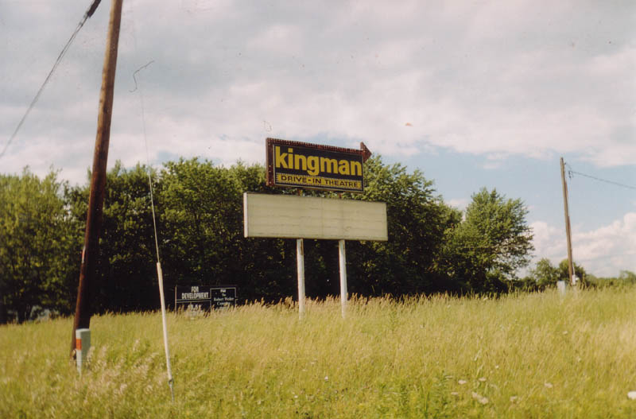
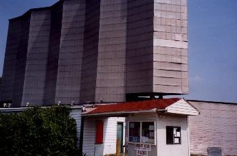
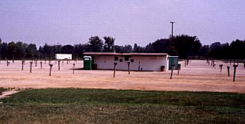
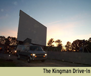
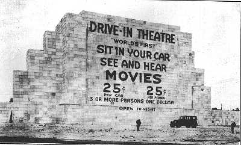

There's really only have one picture here. Why? Because there's not a lot left to show you of the Kingman Drive-in, which served north-side folks for generations. It stood on the east side of US 23 North just outside Delaware. Up until two or three years ago it was a stalwart on summer evenings, providing good movies and hot concession food to people from north Columbus and Delaware County. But then, in 2001, it was the old familiar story again: developers made the owner an offer he couldn't refuse. Skip Yassenoff, who owns all of Columbus's commercial drive-ins, was offered more money by M/I Homes than he could make running the theater for years. Delaware is Ohio's "fastest-growing" county (according to the local news stations, at least), and the land there is being bought up very rapidly by developers of wretched little houses arranged in artificial neighborhoods with streets with names like Tumbleweed Court--developers like M/I. The farm fields of Delaware County are far more valuable as suburban neighborhoods than drive-in movie theaters. To read a Columbus Alive article about the demise of the Kingman, click here.

So, at the end of the summer of 2001, the Kingman turned off its projector and closed the concession stand for the last time. It marked the end of the longest run in Columbus drive-in history: fifty-three years. (Unless, of course, you count the fascinatingly weird Free Christian Drive-In, which has run every summer since the same year the Kingman debuted: 1948.) Two years later I stopped by to see how the place was faring, whether anything was still there. It turned out that only the Kingman's highway marquee was still standing; the developers had taken the screen, concession building, and playground, and bulldozed the parking rows. A lovely new neighborhood full of aluminum siding was just getting started when I was there in 2003. That's all the arrow on the sign points to now, and the sign probably won't be there for much longer. Quite a shame.
These photos, which I found on DriveInTheater.com, show what it looked like before M/I moved in. As you can see, the screen was very impressive.


Unfortunately, two summers later, the 40 East Twin outside of Reynoldsburg followed the Kingman into development destruction. Hopefully we can hold onto the South Twin. If you have information or recollections of the Kingman, please write to me and tell me about it.

Columbus Alive article: "Outdriven: The Kingman Drive-In is Close to Ending its Reign"
Ohio's Forgotten Drive-Ins
40 East Twin Drive-In
The Heath Drive-In
Hocking Theater Drive-In
Kingman Drive-In Theater
The Lake Drive-In
The Leatherwood Drive-In
The Linden Air Drive-In
The Show Boat Drive-In
The Skyline Drive-In

Back
Sources
Starker, Melissa. "Outdriven: The Kingman Drive-In, the Area's Oldest Outdoor Cinema, is Close to Ending its Reign." Columbus Alive. May 24, 2001.